计算机网络复习笔记
当时计网考前复习的时候写的笔记，搬运一下
基础知识
OSI模型结构：
物理层–数据链路层–网络层–传输层–会话层–表示层–应用层 七个层次
应用层
URL
URL：www上网页的网址
URL组成结构：协议名称 | 主机名 | 文件名
例如：https:(协议名称) www.myhost.com（主机名） /index.html（文件名）
HTTP协议
- 浏览器与web服务器之间使用的协议
HTTP请求报文：有四个部分构成：请求行，报头，空白行，正文
请求行结构：方法，URL，HTTP版本
常见HTTP请求头的作用：
HTTP应答报文结构：与请求报文结构基本一致，区别在于请求头处变为应答头。
常见HTTP应答报文代码说明：
200：OK，请求成功
202：Accepted，请求被接受但还没有马上起作用
403：Forbidden，服务被拒绝
404：Not Found，文档未发现
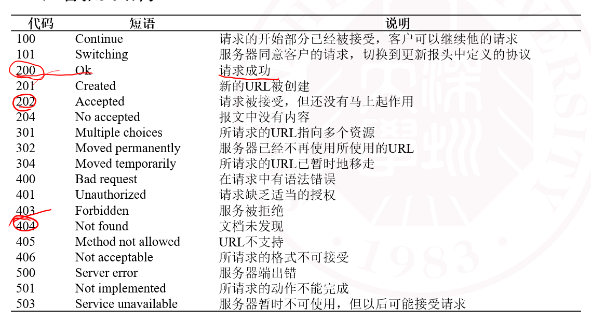电子邮件协议
电子邮件客户端发送邮件：SMTP
接收邮件常用协议：POP4 或 IMAP （POP3）
基于Web的电子邮件用户与远程邮箱之间的通信使用的是HTTP协议，而不是POP3或IMAP4协议
TELNET（交互式会话）协议
TELNET是一种远程登录协议，用于在网络上远程操作计算机系统。TELNET协议基于TCP/IP协议，它允许用户通过TCP/IP网络连接到远程主机（支持远程登录应用），以便在远程主机上执行命令和程序，就像直接在本地计算机上一样。
非持续连接与持续连接
-
**非持续连接：在只有接收到前一个请求的响应的时候才会发送新的请求。**在非持久连接中，每个HTTP请求/响应交换都需要建立一个新的TCP连接。当客户端向服务器发送HTTP请求时，它会建立一个TCP连接并发送一个HTTP请求报文，服务器收到请求后会发送一个HTTP响应报文，并关闭TCP连接。如果客户端需要发送另一个HTTP请求，它需要再次建立一个新的TCP连接，然后发送第二个HTTP请求报文，以此类推。
在非持续链接的http文件传输中，每一个文件的传输之前都要进行握手验证。
-
**持续连接：客户端在没有收到前一个响应的时候就发出新的请求（流水线）。**在持久连接（persistent connection）中，一个TCP连接可以用于传输多个HTTP请求和响应，而不需要每次都建立新的TCP连接。在持久连接中，多个HTTP请求和响应可以使用同一个TCP连接进行传输，从而减少了TCP连接的建立和关闭次数，提高了网络传输的效率。
在持续连接过程中，除了第一次传输之前要进行握手，后面的文件传输无需握手。
工作模式
-
C/S： Client-Server
例如：Web应用程序、邮件客户端、FTP、数据库管理系统等
采用C/S模式原因：网络资源分布的不均匀性
-
P2P：Point to Point
例如：BitTorrent
- P2P网络并不是一个新的网络结构，而是一种新的网络应用模式
FTP
文件传输协议
FTP基于TCP协议
FTP连接中，客户端端口号为临时端口号，服务器端口号为固定端口号，其中控制连接端口号为21，数据连接端口号为20.
FTP的特点
-
交互式用户界面：利用FTP命令方便与服务器对话
-
对文件格式说明：允许指定数据类型和格式（文本方式、二进制方式）
-
权限控制：文件传输之前，向服务器提供登录用户名和口令
TFTP
TFTP基于UDP协议
TFTP的特点
-
传输可靠性：FTP面向连接的可靠传输，采用TCP；TFTP简洁、采用UDP
-
协议命令集：FTP包含发送/接收文件、列出目录与删除文件等复杂命令，TFTP协议只定义文件发送/接收基本命令
-
数据表示：FTP可指定数据类型，TFTP只允许传输ASCII码或二进制文本文件
-
用户鉴别：FTP有登录用户鉴别功能，TFTP不提供用户鉴别功能
DNS
- DNS基于UDP协议，使用无连接服务
DNS的作用
-
主机域名转换成IP地址
-
能够方便访问各种网络资源和服务
-
实现互联网应用层协议的基础
DNS域名解析模式
-
迭代解析：
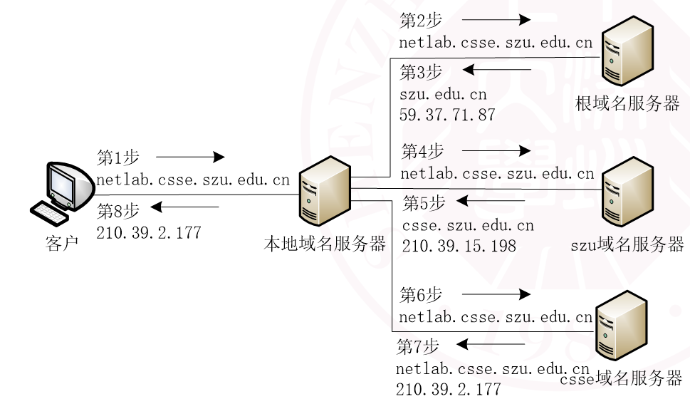 -
递归解析
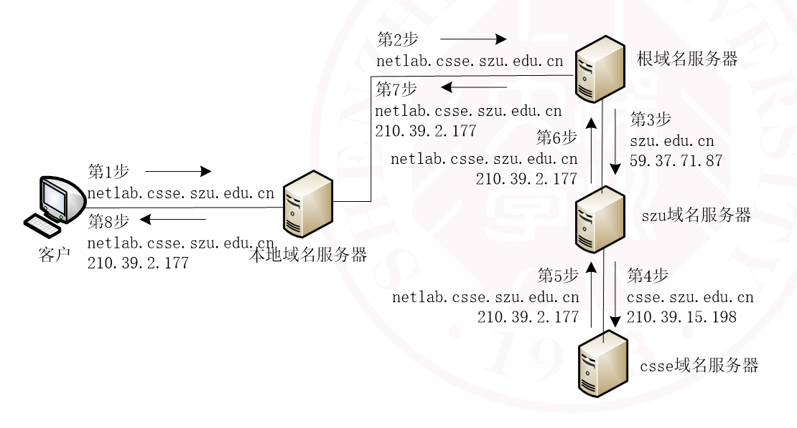 -
高速缓存解析
其他
网络协议相关：
-
网络协议三要素：语法、语义、同步
-
协议是控制两个对等实体之间的通信规则集合
-
协议规定了对等层实体之间所交换的信息的格式和含义
TFTP协议：基于UDP协议实现，常用于在局域网内进行小文件传输。TFTP协议的主要目的是提供一种简单的文件传输机制，以支持网络启动、配置文件传输、固件更新等应用场景。
传输层
-
根本目的：在网络层提供的数据通信服务基础上，实现主机进程间可靠服务，实现“端到端”服务（主机-主机 → 端-端）
-
两大功能：
- 加强、弥补网络层提供的网络服务
- 进一步提供进程间“可靠”通信机制
-
关键属性：传输层协议软件属于OS内核软件而非用户软件！
传输层与应用层之间的关系：传输层提供应用进程间的逻辑通信
应用进程、传输层接口与套接字
-
传输层协议在本地主机操作系统控制下，为应用程序提供确定的服务
-
网络层解决IP地址，传输层解决进程标识
-
套接字：建立网络应用程序的可编程接口（应用编程接口API）
应用进程标识的基本方法：
-
传输层进程寻址：通过TCP/UDP端口号实现
-
套接字：IP地址+端口号，比如：202.1.2.5:80
-
进程标识三元组：协议、本地地址、本地端口，也叫半相关
- 比如：TCP, 202.1.2.5:3022
-
进程通信标识五元组：协议、本地地址、本地端口、远程地址、远程端口号，也叫全相关
端口号的分配方法：
-
熟知端口号：给每种服务器分配的确定的全局端口号，也叫公认端口号，范围在0~1023，统一分配与控制
一般来说，客户端进程不建议采用熟知端口号范围内的端口
-
注册端口号：在IANA注册的端口号，没有明确的定义服务对象，不同程序可根据实际需要自己定义，范围在1024~49152
-
临时端口号：客户端程序使用的临时端口号，由客户端上TCP/IP软件随机选取，范围在49152~65535
-
常用熟知端口号：
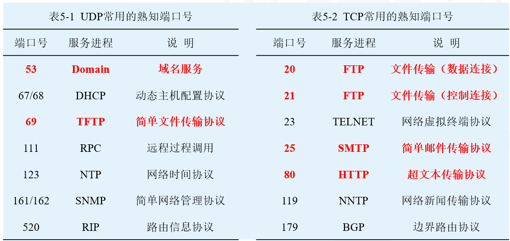
TCP协议与UDP协议
两种协议的比较：
| 特征/描述 | TCP | UDP |
|---|---|---|
| 一般描述 | 允许应用程序可靠地发送数据，功能齐全 | 简单、高速，只负责将应用层与网络层衔接起来 |
| 面向连接与无连接 | 面向连接，在TPDU传输之前需要建立TCP连接 | 无连接，在TPDU传输之前不需要建立UDP连接 |
| 与应用层的数据接口 | 基于字节流，应用层不需要规定特点的数据格式 | 基于报文，应用层需要将数据分成包来传送 |
| 可靠性与确认 | 可靠报文传输，对所有的数据均要确认 | 不可靠，不需要对传输的数据确认，尽力而为地交付 |
| 重传 | 自动重传丢失的数据 | 不负责检查是否丢失数据和重传 |
| 开销 | 低，但高于UDP | 很低 |
| 传输速率 | 高，但低于UDP | 很高 |
| 适用的数据量 | 从少量到几个GB的数据 | 从少量到几百个字节的数据 |
| 适用的应用类型 | 对数据传输可靠性要求较高的应用，例如文件与报文传输 | 发送数量比较少，对数据传输可靠性要求低的应用，例如IP电话、视频会议、多播与广播 |
UDP协议
主要特点：
-
无连接、不可靠：开销低、尽力而为 存在数据包丢失、重复、顺序错乱等问题。
-
面向报文的传输层协议：UDP 对应用层传递下来的报文，既不合并，也不拆分，而是保留这些报文的边界。UDP 层一次向对方交付一个完整的报文
-
没有拥塞控制：网络出现的拥塞时，UDP不会使源主机的发送速率降低，适合实时通信应用
-
首部开销小：只有8字节
适用范围：
-
对性能的要求高于对数据完整性的要求
如： 视频播放实时交付的要求高于对数据交付可靠性要求（可丢失个别数据包）
-
需要“简短快捷”的数据交换
简单的请求与应答报文交互
-
需要多播和广播的应用
源主机以恒定速率发送报文，拥塞发生时允许丢弃部分报文
UDP数据报格式
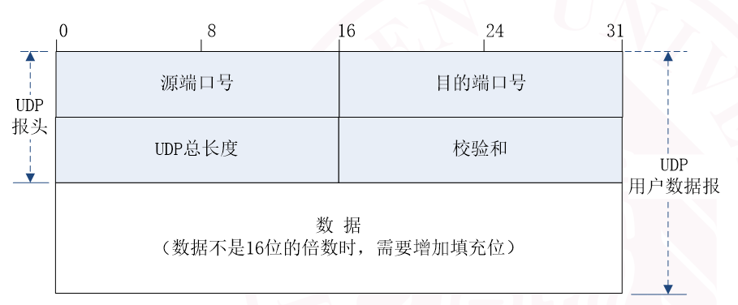-
**端口号：**包括源端口号和目的端口号，分别表示发送方和接收方的进程端口号，各为2字节
-
UDP总长度：包括报头在内的用户数据报的总长度，2字节
-
**校验和：**用于检查整个数据报（含报头）是否传输出错，可选，若无，填0
校验和计算：伪报头+UDP数据报
伪报头：验证UDP数据报是否正确传送到目的进程
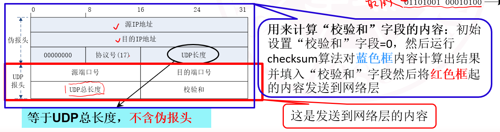
1
2
3
4
5
6
7
8
9
10
11
12UDP checksum算法：
UDP校验和是用来检测数据报文在传输过程中是否发生错误的一种方法。它是对数据报文中的所有字段，以及一些来自IP报头的字段，进行一种特殊的加法运算得到的一个16位的值。这些字段构成了一个伪首部，用于进行校验和计算。
校验和计算的步骤如下：
- 将数据报文中的所有字段，以及伪首部中的字段，按照16位为一组，进行二进制求和。
- 如果最后有不足16位的部分，就在其后面补0，使其成为16位。
- 如果求和过程中出现溢出，就将溢出的部分加到最低位上。
- 将求和得到的结果取反码，即将所有的0变为1，所有的1变为0。这就是校验和。
- 将校验和放入数据报文的校验和字段中，发送给接收方。
接收方收到数据报文后，也要进行校验和计算。它将数据报文中的所有字段，以及伪首部中的字段，按照同样的方法进行二进制求和，并取反码。然后，它将这个结果与数据报文中的校验和字段进行比较。如果相等，就说明没有发生错误。如果不相等，就说明发生了错误。 -
思考题：UDP协议要求一个UDP数据报的数据字段长度必须是16位比特的整数倍，不足补0。为什么？
UDP数据报的数据字段长度必须是16位比特的整数倍，是因为UDP报文头中有一个16位的字段表示UDP总长度，这个字段包括了UDP报头和数据区的长度，而UDP报头的长度是固定的8字节，所以数据区的长度必须是8字节的整数倍，也就是16位比特的整数倍。如果数据区的长度不足，就需要在后面补0，以保证UDP总长度字段的正确性。
TCP协议
特点及应用：
-
支持面向连接的服务：打电话式、会话式通信
-
支持字节流传输：字节管道、字节按序传输和到达
-
支持全双工服务：一个应用进程可以同时收发数据、捎带确认
-
支持建立多个并发的TCP连接（服务器同时响应多个连接）
-
支持可靠传输服务：不丢失、不重复、有序
TCP报文格式
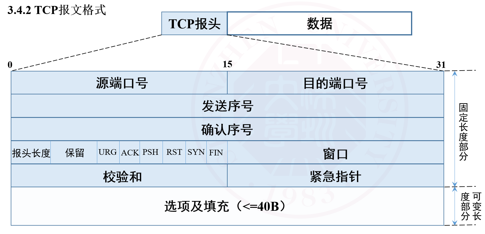
- 源端口号：TCP报文发送方的端口号，占16 bit，所能表示的序号范围是：0~(216-1)
- 目的端口号：TCP报文接收方的端口号，占16 bit，所能表示的序号范围是：0~(216-1)
- 发送序号(seq)：表示TCP数据字段的第一个字节的序号
- 连接建立时（即SYN=1），初始序号（ISN）由随机数生成器生成，发送端和接收端独立产生，可能不一样
- 占32 bit，所能表示的序号范围是：0~(232-1)
- 确认序号(ack)：只有当ACK位=1时有效，表示发送此报文段的进程期望接收的下一个新字节的序号。
- 确认序号=N+1，表示接收方已经成功接收了序号为N及之前的所有字节，要求发送方接下来应该发送起始序号为N+1的字节段。
- 注意区分ack与ACK（ack为确认序号，ACK为确认位）
- 窗口值：指示当前进程可以接收的数据长度 (单位: 字节)。
- 准备接收下一个TCP报文的接收方，通知即将发送报文的发送方下一个报文中最多可以发送的字节数，是发送方确定发送窗口的依据，是动态可变的。
- 报头长度：TCP报文首部的大小，单位是4字节
- 思考：TCP和UDP报头中的长度字段有什么不同？该字段的取值范围是[5,15]，为什么?
- TCP报头中的长度字段表示TCP报头的长度，单位为32位字，占4位，最小值为5，最大值为15。UDP报头中的长度字段表示UDP数据报的总长度（包括报头和数据），单位为字节，占16位，最小值为8，最大值为65535。
- TCP报头中的长度字段是可变的，因为TCP报头有可选部分。UDP报头中的长度字段是固定的，因为UDP报头没有可选部分。
- 思考：TCP和UDP报头中的长度字段有什么不同？该字段的取值范围是[5,15]，为什么?
- 校验和：
- 与UDP校验和的相同点：1）计算方式相同；2）也需要伪首部。
- 与UDP校验和的不同点：1）UDP校验和可选，TCP校验和必须；2）伪首部协议字段值为6。
TCP报文标志位的含义
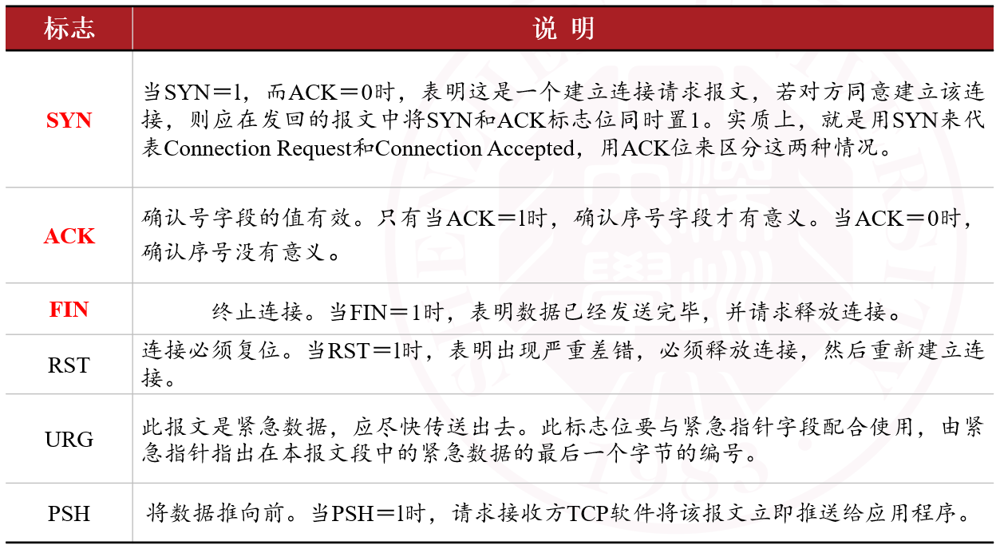TCP最大段长度（MSS）：TCP报文数据部分的最大长度，不包括TCP报头长度。默认值为536字节
MSS与窗口长度的区别：
- MSS是最大报文段长度，表示TCP报文段中数据部分的最大长度，单位为字节。窗口长度是TCP滑动窗口的大小，表示接收方能够接收的数据量，单位为字节。
- MSS是一个静态的值，只出现在TCP连接建立时的SYN报文段中，由发送方和接收方协商确定。窗口长度是一个动态的值，随着数据的发送和接收而变化，由接收方根据自身的缓存空间和网络状况来通知发送方。
MSS大小选择：1) 考虑协议开销，不能太小；2) 考虑分段导致的网络层开销和传输出错概率，不能太大；3) 考虑发送和接收缓冲区的限制
思考题：
1.TCP报文段为什么没有字段定义数据字段的长度？这样做会有什么潜在的问题？
1 | - 原因：TCP报文段是基于IP协议传输的，IP首部中已经有了整个数据报的总长度字段，而TCP首部中也有了TCP首部的长度字段，因此可以通过减法得到数据字段的长度。另外，TCP提供的是面向字节流的传输，所传输的数据是无边界的，不需要定义数据字段的长度。 |
- TCPv6的数据结构与TCPv4的数据结构有何不同？
1 | TCPv6和TCPv4的数据结构基本上是一样的，都是由源端口、目的端口、序号、确认号、数据偏移、保留位、控制位、窗口大小、校验和、紧急指针和选项字段组成的。不过，TCPv6是在IPv6的网络层上运行的，而TCPv4是在IPv4的网络层上运行的。IPv6和IPv4的主要区别是地址长度，IPv6有128位，而IPv4只有32位。这意味着IPv6可以提供更多的地址空间，更好的安全性和更高的效率。 |
TCP通信过程
三个阶段：建立连接——数据双向传输——释放连接
-
建立连接阶段：
三个报文段交互，三次握手
1、客户端：发送连接建立请求，SYN=1，ACK=0，Seq=x。SYN=1的报文段不携带数据，但要消耗掉一个序号。
2、服务器端：收到请求并同意，SYN=1，ACK=1，Seq=y, ack=x+1（回复的ack为接收的seq+1）。该报文段也是SYN=1的报文段，不携带数据，但要消耗掉一个序号
3、客户端：收到服务器的确认，并对此进行确认。ACK=1, Seq=x+1, ack=y+1
-
释放连接阶段：
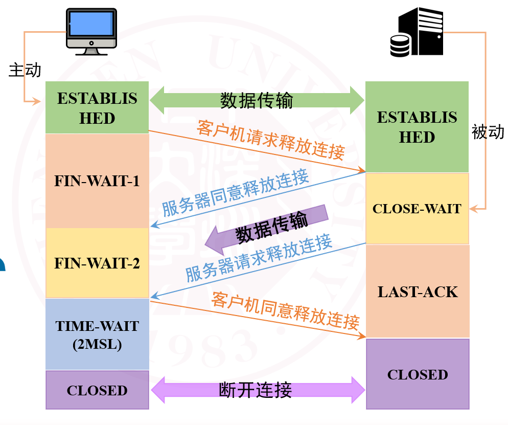- 两个方向的连接，可以间隔开来释放
- 每个方向的连接释放，需要2个报文段
其中，图中的MSL为最大报文生存时间（Maximum Segment Lifetime），是任何报文段被丢弃前在网络内的最长时间。
思考：需要等待2MSL的原因
1
TCP通讯释放连接时需要等待2MSL的原因是为了保证网络中所有的数据包都被接收方接收完毕，防止这些数据包在网络中滞留，导致新的连接误认为这些数据包是自己的数据包，从而出现错误。2MSL即两倍的MSL，TCP的TIME_WAIT状态也称为2MSL等待状态。当TCP的一端发起主动关闭，在发出最后一个ACK包后，即第3次握手完成后发送了第四次握手的ACK包后就进入了TIME_WAIT状态，必须在此状态上停留两倍的MSL时间，等待2MSL时间主要目的是怕最后一个ACK包对方没收到，那么对方在超时后将重发第三次握手的FIN包，主动关闭端接到重发的FIN包后可以再发一个ACK应答包。
假如客户端建立了到服务器的连接，传输了一些数据，但是突发故障崩溃。此种情况下，服务器将处于一种什么状态？
1
2服务器此时应处于等待应答状态，为了避免客户端崩溃占用服务器资源，服务器设置保持定时器来检验客户端的连接状态。
保持定时器（服务器端）：每次收到客户端发来的消息就复位；定时器设定为2小时，超时则发送探测包。连续十个探测包还没收到回应，则中断连接。客户端最终进入的TIME-WAIT状态该如何实现？
1
使用时间等待定时器（客户端）：设定为报文寿命的2倍
-
TCP通过三次握手建立连接，通过四次握手释放连接
思考1：TCP通讯为什么要用三次握手，一次，两次，四次行不行？
1 | 一次握手显然不可行，因为没有收到对方的任何回复，无法确定对方是否同意建立连接并进行通信。 |
思考2：什么是SYN攻击？
1 | SYN攻击也叫SYN洪泛（SYN Flood），是指攻击者发送大量的SYN包给服务器，但是并不回复ACK包，导致连接处于“半打开” 状况，消耗了服务器大量的资源。当合法用户发送SYN包请求建立连接时，服务器由于资源被占用而拒绝与其连接并提供服务。因此，SYN攻击属于拒绝服务攻击（Denial-of-service attack） |
思考3：初始序列号为什么每次都要动态随机选取而不能固定不变？
1 | TCP通讯初始序列号需要动态随机选取，主要是为了保证网络安全。TCP在开始传输数据前，客户端和服务器需要随机生成自己的初始序列号（initial sequence number-ISN），然后通过三次握手进行交换确认。这样做的目的是为了防止网络中的攻击者通过猜测序列号来伪造数据包，从而达到攻击的目的。如果序列号是固定的，那么攻击者可以通过猜测序列号来伪造数据包，从而达到攻击的目的。 |
思考4：1.对于数据字段长度=0的SYN/FIN报文段S，假定S的序号为x，为什么其ACK报文段的序号等于x+1？
1 | TCP协议中，对于数据字段长度为0的SYN/FIN报文段S，假定S的序号为x，其ACK报文段的序号等于x+1。这是因为SYN/FIN报文段不携带数据，但是需要占用一个序号。因此，当SYN/FIN报文段的序号为x时，其ACK报文段的序号应该为x+1。 |
总结：
-
以滑动窗口中的多个报文段为单位的双向传输（数据传输阶段）
-
应用进程将数据以字节流发送，无需考虑发送数据字节长度，由TCP负责将字节流分段 打包
-
借助滑动窗口，实现按序的，无差错、不丢失、不重复传送字节流
-
提供差错控制功能，保证正确接收字节流（通过差错检测、确认、重传实现）
传输控制协议
TCP的滑动窗口与确认重传机制
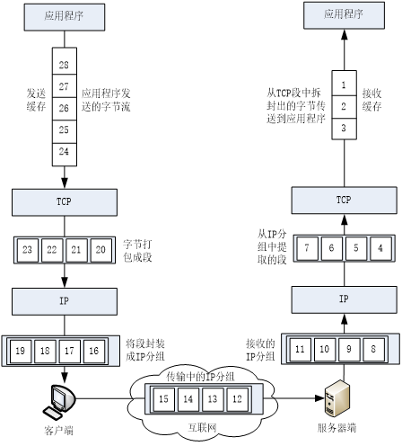字节流分段，按段（序号）传输，捎带确认（确认号）
通过滑动窗口跟踪、记录发送状态，实现差错控制
两个缓存，两个窗口：
-
发送方缓存：用于存储准备发送的数据
-
发送窗口：窗口值不为0，可以发送报文段
-
接收方缓存：将正确接收的字节流写入缓存，等待接收读取
-
接收窗口：窗口值等于接收缓存可以接收的字节流
发送方使用发送缓存和发送窗口，接收方使用接收缓存和接收窗口，发送方窗口大小大于接收方窗口大小时，发送方需等待接收方确认完毕后才能继续发送数据。
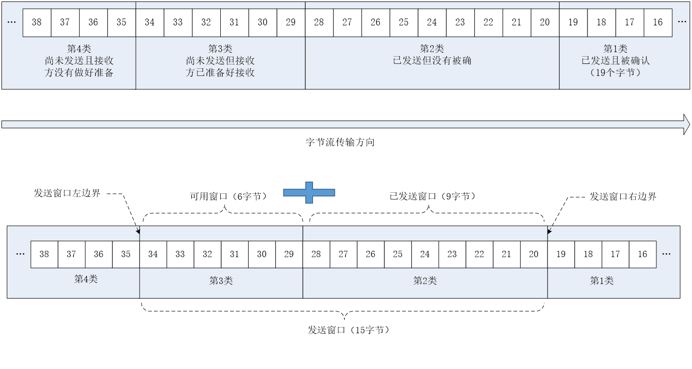
注意：已经发送的数据要等接收方确认后发送窗口才能进行滑动
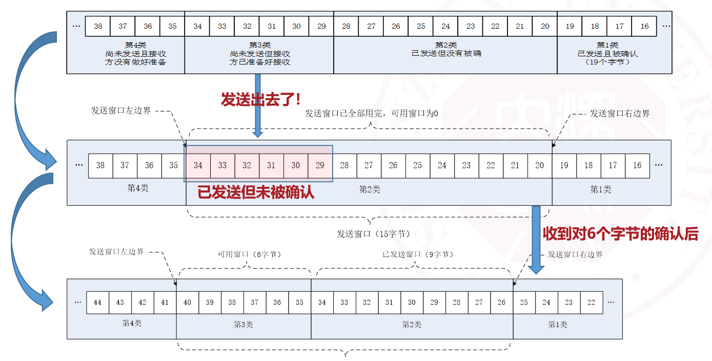
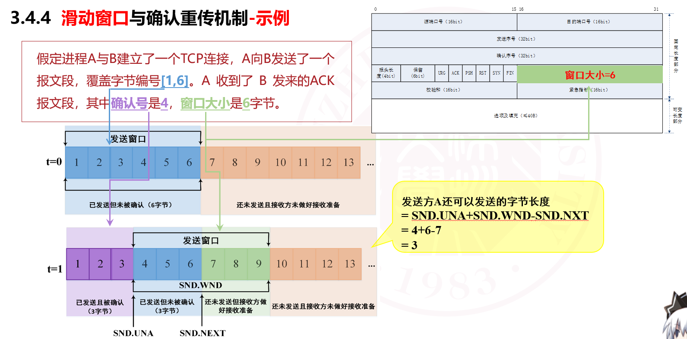
假定进程A与B建立了一个TCP连接，A向B发送了一个报文段，覆盖字节编号**[1,6]。A 收到了 B 发来的ACK报文段，其中确认号是4**，窗口大小是6字节。
则B的接收窗口的一种可能形式：
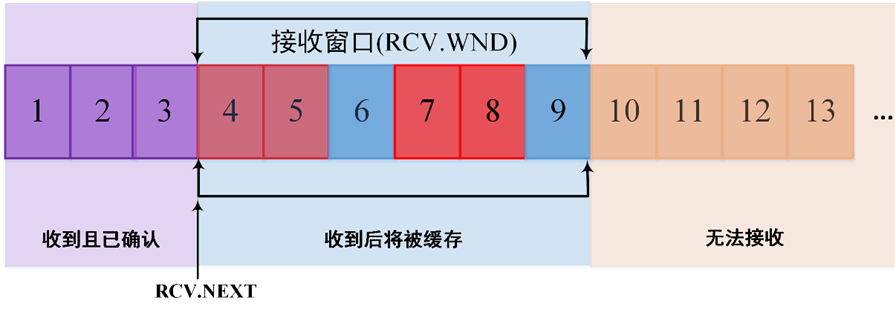对上图的说明：
1）B期望接收的字节在范围[4,9]之内
2）若收到的字节的序号<=3，则是重复的数据，丢弃
3）若收到的字节的序号>=10，则是跳序的数据，丢弃
4）只有当收到的字节序号距离RCV.NXT指针是连续的(如收到序号为4,5的两个字节)，接收窗口才会向右滑动(如RCV.NXT += 2)
5）TCP支持SACK选项，即可以对[4,9]之间的非连续字节进行选择确认。如收到序号4,5,7,8的四个字节，B向A发送ACK报文段，其中确认号是6，TCP选项为[7,8]，表示序号7到8之间的字节被收到。
总结：对于接收窗口，重复收到的数据（已经确认）和跳序数据（超出接收窗口范围）直接丢弃，只有收到字节序号在接受窗口范围内切连续，接收窗口才会向右滑动，同时支持非连续字节传输，利用SACK补全缺失的序号。
滑动窗口的特点：
- 使用发送和接受缓冲区，以及滑动窗口机制控制TCP连接上的字节传输
- TCP滑动窗口面向字节流，可以起到差错控制和流量控制作用
- 接收方可以在任何时候发送确认，窗口大小可由接收方根据需要增大或减少
- 发送窗口值不能超过接收窗口值，发送方可以根据自身需要来决定
接收窗口、发送窗口与拥塞窗口的关系
拥塞窗口每次收到一个确认段之后大小对应增加该段的大小
接收窗口大小为分配大小 - 已确认的数据的大小
发送窗口大小 = min{ 拥塞窗口， 接收窗口 }
确认重传的方式：
当传输过程中出现了报文段丢失，需要重新传输
- 回退方式（Go-back-N, GBN）：假设丢失了第2个报文段，不管之后的报文段是否已正确接收，从第2个报文段的第1个字节序号151开始，重发所有的4个报文段。即重新发送包含确实段的整个报文，显然，效率低下！
- 选择重发（Selective Acknowledgment，SACK）：接收方收到不连续的字节时，如果这些字节的序号都在接收窗口之内，则首先接收缓存这些字节，并将丢失的字节流序号通知发送方，发送方只需重发丢失的报文段，而不需要重发已经接收的报文段。
超时重传机制：
**重传定时器：**处理报文确认与等待重传的时间。发送一个报文，将其副本放入重传队列
定时器的时间应当如何设置？
-
如果把超时重传时间设置得太短，就会引起很多报文段不必要的重传，使网络负荷增大；
-
但若把超时重传时间设置得过长，则又使网络的空闲时间增大，降低了传输效率。
-
定时器设置与报文段往返时间RTT紧密相关。RTT表示一个报文段自发出到收到ACK的时间间隔。
RTT的特点
-
RTT随网络状态而随机波动，既非定值，也无规律
-
发送数据报的同时，需要对该报文的RTT进行估计
RTT计算的方法（*不要求掌握）：
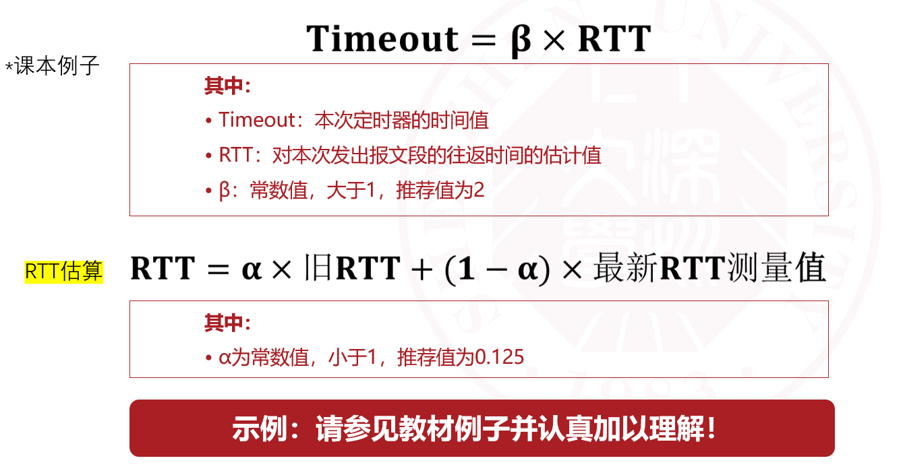TCP流量控制与拥塞控制
流量控制
由发送方控制发送速率，使之不超过接收速率，防止接收方来不及接收字节流，而出现报文丢失现象
基本流程：
触发零窗口事件的流量控制基本事件逻辑：
1) 零窗口(Zero window)通告
当TCP接收方的缓冲区满(如应用层未能及时提取数据)，则接收方往发送方发送纯ACK报文段(数据长度=0，窗口字段=0)，称之为零窗口通告
2) 窗口更新(Window update)
当接收方缓冲区从满状态变到有可用空间时，接收方向发送方发送纯ACK报文段(数据长度=0，窗口字段>0)，称之为窗口更新
3) 窗口探测(Window probe)
因为纯ACK报文段(数据长度=0, ACK=1的报文段)不被TCP可靠递送，则第2步的窗口更新有可能在网络中丢失，导致收发双方都处于等待的死锁状态。
为避免活锁，发送方使用一种叫**坚持定时器(persist timer)**来定期触发：发送方往接收方发送窗口探测报文段(数据长度>0, 保证被TCP递送)。作为响应，接收方将自己的缓冲区可用空间大小放入ACK报文段的窗口字段，由此，发送方获知接收方是否能继续接收数据。
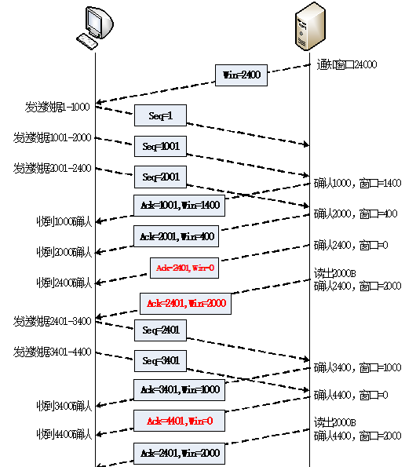
红字1：零窗口通告：纯ACK报文段，数据长度=0，窗口字段**=0**
红字2：窗口更新：纯ACK报文段，数据长度=0，窗口字段=0
红字3：窗口探测：纯ACK报文段，数据长度=0，ACK=1，发送方发送
拥塞控制
拥塞现象：当多个主机端点通过TCP向整个网络注入数据时，TCP如果不对注入数据的速率进行控制，将导致整个网络出现拥堵：
-
往返时延增大导致TCP重传，进一步增加拥堵
-
中间路由器的缓冲容量有限。当IP数据报的到达率持续超过发出率时，中间路由器的缓冲变满, 只好丢弃新进的数据包，导致TCP重传。
拥塞判定：
1）重传定时器超时
现在通信线路的传输质量一般都很好，因传输出差错而丢弃分组的概率是很小的（远小于 1 %）。只要出现了超时，就可以猜想网络可能出现了拥塞)
2）收到三个相同（重复）的 ACK
个别报文段会在网络中丢失，预示可能会出现拥塞（实际未发生拥塞），因此可以尽快采取控制措施，避免拥塞
拥塞控制：慢开始，拥塞避免，快重传，快恢复
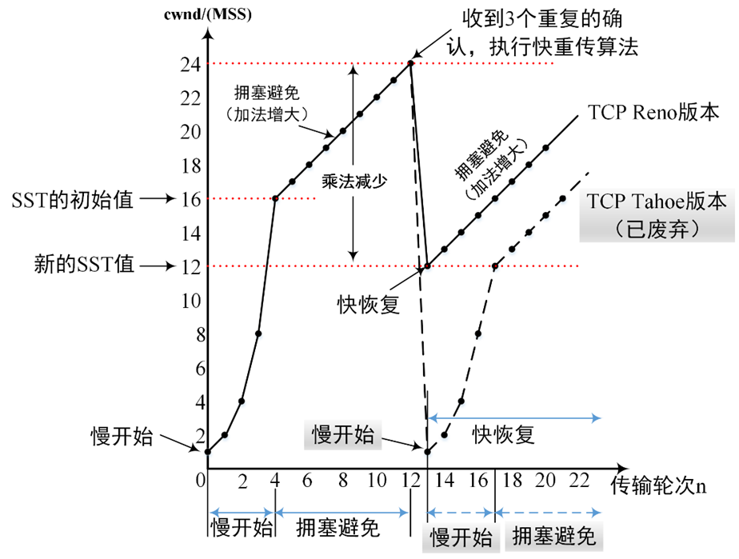-
慢开始：
-
慢开始阔值SST：慢开始阶段和拥塞避免阶段的分界线，初始值有算法设定
-
慢开始阶段：cwnd≤SST。在该阶段，cwnd初始值为1，且每结束一个RTT，cwnd翻倍
-
当cwnd=SST时：进入拥塞避免阶段
-
-
拥塞避免：发生拥塞时，Tahoe版本进入慢开始，Reno版本直接进入快恢复
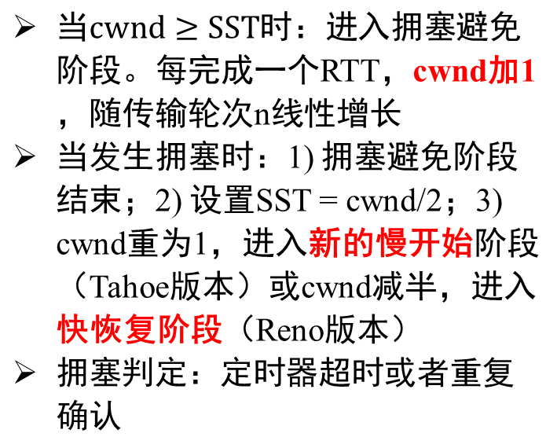、
-
快重传：发送方连续收到3个ACK确认后执行
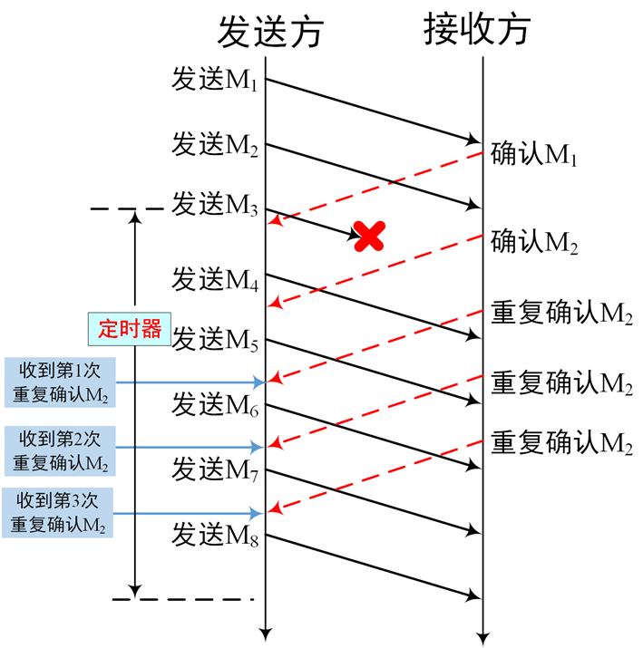-
“快重传”规定：接收方应及时向发送方连续3次发出对M2的“重复确认”，要求尽早重传未被确认的报文
-
当发送方接收到重复的ACK时，立即重传丢失的报文段M3，而不必等到M3的重传定时器超时才重传
-
TCP Tahoe版和TCP Reno版都支持快重传
-
-
快恢复：TCP Reno版在发生拥塞事件时，将cwnd减半，直接进入拥塞避免阶段
网络层
网络层提供：主机之间的不可靠的，无连接的分组传输服务。
获取HTTP服务器地址：DNS协议
ICMP
常见ICMP报文的类型：
- 路由重定向：用于通知发送方，数据报应该通过不同的网关进行传输。其中，代码字段指定了新的网关地址。
- 目的不可达：用于通知发送方，目标主机或目标网络不可达。其中，代码字段可以表示具体的原因，如目标主机未响应、目标网络不可达等。
- 源站抑制：用于通知发送方，由于网络拥塞或其他原因，接收方无法处理所有接收到的数据报。发送方应该减缓发送速度，以避免发送过多的数据报。
- 超时：用于通知发送方，数据报的 TTL（生存时间）已经减至 0，导致数据报被丢弃。
上述几种报文类型也是ICMP差错报文的主要内容。
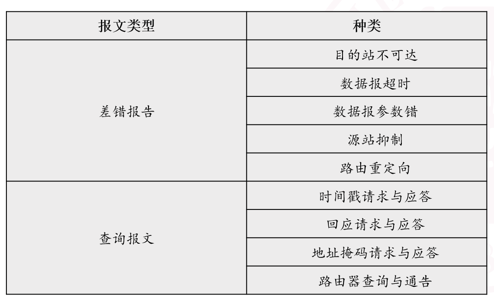- PING指令使用了ICMP报文，但并没有使用差错报文。
路由器没有定义缺省路由，当接收ip不在路由表中时，将会采取如下策略：丢弃数据报或发送ICMP不可达消息。
NAT技术
用于将私有网络中的 IP 地址映射为公共网络中的 IP 地址，以实现内部网络与外部网络的通信。
- 静态NAT：一对多
- 动态NAT：多对多
NAT协议丢弃IP分组的情况：
- 未匹配到转换规则：当 NAT 设备接收到来自内部网络或外部网络的 IP 分组时，如果未找到与该分组匹配的转换规则，那么该分组将被丢弃。
- 安全策略限制：当 NAT 设备配置了安全策略时，可能会根据策略规则拦截某些 IP 分组，以保护内部网络的安全。例如，可能会拦截来自未授权的 IP 地址的分组，或者拦截包含恶意代码的分组。
- 资源限制：当 NAT 设备的资源不足时，可能会丢弃某些 IP 分组，以确保设备的正常运行。例如，可能会丢弃优先级较低的分组，或者丢弃过期的分组。
- 转发规则限制：当 NAT 设备配置了转发规则时，可能会根据规则限制某些 IP 分组的转发。例如，可能会限制外部网络中的主机访问内部网络中的某些主机，或者限制内部网络中的主机访问外部网络的某些服务。
路由协议
-
RIP协议
-
OSPF协议
链路层&物理层：
数据编码技术
脉冲编码调制（PCM）流程：采样→量化→编码
链路层中的差错控制
差错检测与纠正
-
检测：检错码，自动发现差错的编码
-
纠错：纠错码，不仅能发现差错，且能够自动纠错的编码
-
检错与纠错思想：在向信道发送数据前，先按照某种关系增加冗余位，构成码字发送。接收方收到码字后检查信息位和冗余位，进行校验以发现差错。
校验和：常用于传输层，检错码
奇偶校验：较简单，检错码
循环冗余校验：较复杂，检错码
海明码：纠错码
- 奇偶校验：在信息位最后添加一位作为校验位，使得码字中 ‘1’ 的个数为奇（偶）数。
CRC校验
#CRC校验码可以检测出所有的单比特错误
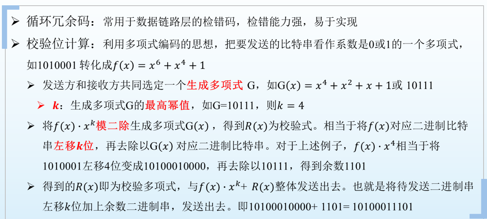
步骤：
1、选取生成多项式，根据该多项式的最高次项对原数据进行左移（例如最高次项为4次，则左移4位），后面多出的位数为冗余位，用于循环校验。
2、将左移后的数据模2除上述生成多项式，得到的余数即为冗余码，发送的时候将原数据+冗余码一并发送。
具体样例见上图
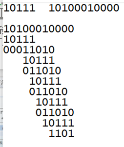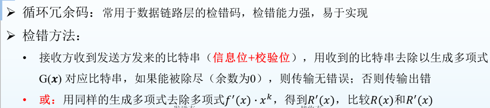
Ipv6
Ipv6分组的结构：基本头、扩展头部、数据
介质控制访问
-
定义：用来决定广播信道中信道分配的协议，属于数据链路层的一个子层，称为介质访问控制（Medium Access Control，MAC）子层
-
**任务：**为使用介质的每个节点隔离来自同一信道上其它节点所传送的信号，以协调活动节点的传输
-
分类：
信道划分介质访问控制：频分多路复用、时分多路复用、波分多路复用、码分多路复用 【静态划分】
随机访问介质访问控制：ALOHA、CSMA/CD、CSMA/CA 【动态划分】
轮询访问介质访问控制：令牌传递协议
-
频分多路复用（FDMA）：
将基带信号调制到不同频率载波上再进行叠加形成一个复合信号的技术
一般需引入“保护频带”
效率高、技术成熟、易实现
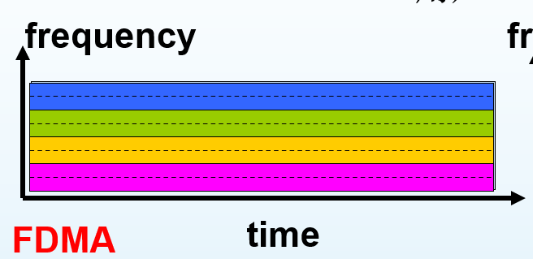 -
时分多路复用（TDMA）
将物理信道按照时间分成若干个时间片，轮流地分配给多个信号使用
每个时间片由复用的一个信号占用
统计时分复用是一种改进，不固定地分配时隙，而是按需动态分配时隙
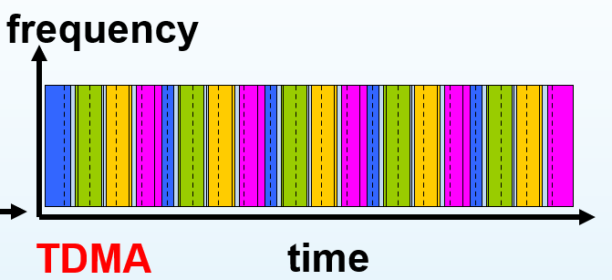
CSMA/CD
Carrier sense medium access/ collision detection
CSMA/CD技术十六字真言：
-
先听后发：监听到总线空闲才发送数据
-
边听边发：监听到空闲开始发，听是为了判断是否发生碰撞
- 碰撞：不同用户发送的数据在信道混叠
-
冲突停止：发生冲突停止数据发送
-
延迟重发：发生冲突后进行延迟重发
冲突窗口
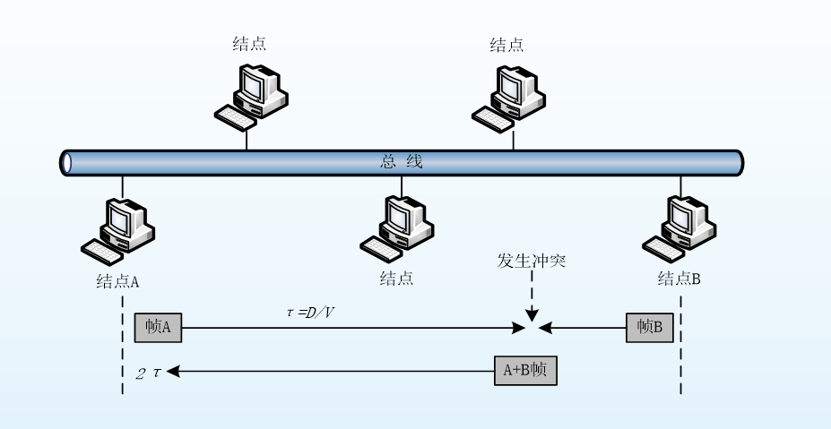定义：2D（Distance）/ V（传输速度），即发送数据到发生冲突的节点并接收到发生冲突的时间
#这里的冲突域窗口的定义应是主机发送数据后能够接收到发生冲突信息的时间
冲突域窗口时间不能小于数据帧发送时间，即接收到冲突的时间应该在数据发送完毕后。
冲突域时间最小值：冲突点位于两台主机中间
冲突域时间最大值：冲突点位于某一主机附近